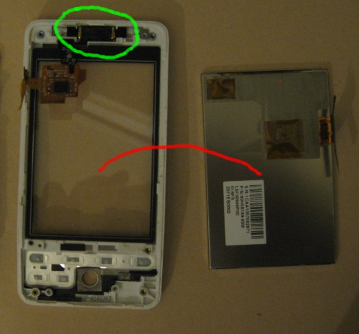

Charles Keepax's Blog
HTC Hero Disassembly
Recently my HTC Hero has developed a few faults and with it being out of warranty I though I would have a crack a fixing them myself. Quite a while a go one of the directions on my phones trackball ceased to function, now given that you don't use the trackball very often I mostly ignored this. However the touch screen then went completely nuts. The bottom 10% of the screen would often be completely unresponsive and sometimes it would imagine additional fingers poking the screen causing all sorts of weird behaviour. This, it turns out, is caused by the screen digitizer giving up the ghost; that's the bit of the phone that senses your finger poking the screen. This youtube video gives a good sense of what this issue looks and feels like if you are trying to diagnose it yourself. Anyway this made the phone rather infuriating to use, so a fix was required and whilst at it I might as well fix that pesky trackball as well.
This guide will take you through the steps required to disassembly your HTC Hero G3. Obviously this information is provided with no guarantees and I certainly accept no responsibility if you break your phone doing anything I suggest. It is worth noting that I am in no way what so ever affiliated with HTC and following this guide void your phone's warranty. Well if you are suitably disclaimed, but not discouraged lets proceed.
Tooling Up
We will need three tools before we get going, as pictured: a T5 Torx screwdriver, an approximately No.0x50 Phillips screwdriver, and some sort of pry tool. Personally, I make do with a flat head screw driver for a pry tool but you can get safer plastic pry tools. If you don't happen to have these things handy they can generally be picked up in most hardware/electronic shops.
Clearly you will need an HTC Hero G3 as pictured and any replacement components you require. Replacement parts are readily available on eBay.
The Easy Bit
Rather obviously we start by taking the back off the phone, as illustrated by the red lines in the image. To do this pull at the small groovy on the top of the phone with your finger nail and the back should snap right off. Now pop out the battery (green line in the image) and memory card (blue line in the image).
Getting The Motherboard Out
Firstly we need to remove all the screws, as indicated by the red lines in the image. Note that one of the screws will probably be covered with a "void" stick this screw is a Phillips and is located on the right side in the middle. The other 5 screws are all Torx screws. Once the screws are out pry the cover off the motherboard as demonstrated in the green circle. I found it was best to start on one side of the motherboard then work my way round the top and down the other side. This is definitely one of the most stressful parts of the operation and you should take great care not to break anything.
Lift off the motherboard cover as indicated by the blue line in the image. Now we have a few more screws to remove as shown by the red lines in the image, these are all philips screws. Finally, we need to unplug the screen digitizer and the screen itself this are indicated by the green circles in the image. Peel the adhesive tape off the motherboard but leave it attached to the connector. Then very gently leaver the connector off the motherboard from the centre of the phone side of the connector.
The Screen and Digitizer
At this stage we should very easily be able to lift off the motherboard as indicated by the red line in the following image.
Next we should peel the adhesive tape off the screen digitizer IC this is indicated in the green circle in the image. Put the tape to one side carefully as ideally we will want to use it again. With the tape off, we can lift up the digitizer IC.

Next lift up the screen section and gentle jiggle out the LCD screen itself, as indicated by the red line in the image. The whole assembly on the left consitues the screen digitizer, and the one on the right is the LCD screen itself. It is worth checking if the replacement digiter has the component shown in the green circle, this is the speaker and if the new digitizer does not have one we will have to move it across. To do so pry out the 2 rubber blocks either side of it and then remove the whole speaker and metal grill assembly, it is a little fiddly to not bend the metal part so care must be taken. This part can then be inserted into the new digitizer along with the two rubber blocks. Notice that the blocks have a small nick out of one corner these should be positioned toward the top of the phone on the inside.
Trackball
Turning our attention over to the motherboard should we need to replace the trackball as well.
Firstly, we need to peel back the sticky tape highlighted by the yellow circle on the picture. Apologies for the quality of this picture it didn't quite turn out as well as I intended. Pry appart the two parts of the smaller angled board, we are seperating the circuit board itself (green) from the plastic casing above it (black). We should do this at the point indicated by the red circle, there is an adhesive pad here holding the two parts together. Be careful down on the left where the green cicle is as there is a small clip hanging over the board and we don't want to snap it off. Finally, the trackball should simply fall out of its place as indicated by the blue circle. The new trackball should simply slip in, make sure to line the teeth up with the grooves in the plastic casting.
Reassembly and We're Done
Reassembling the phone is pretty simple just follow the steps we have outlined but in reverse. Put the screws in, stick the tapes back on, etc. Hopefully, this guide is useful if you find yourself thinking of repairing your HTC Hero.